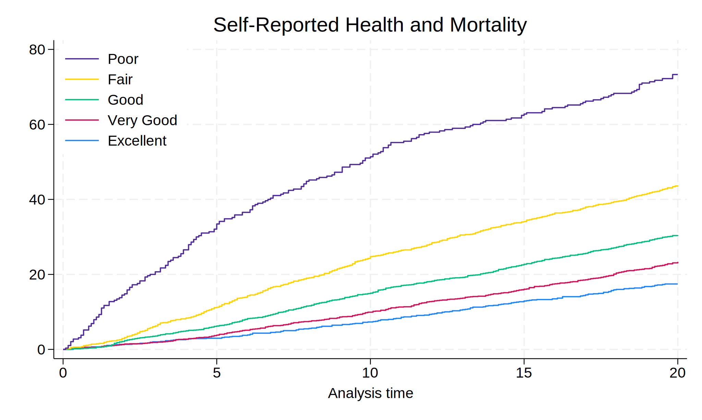
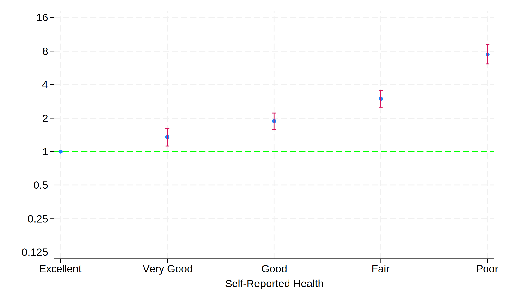
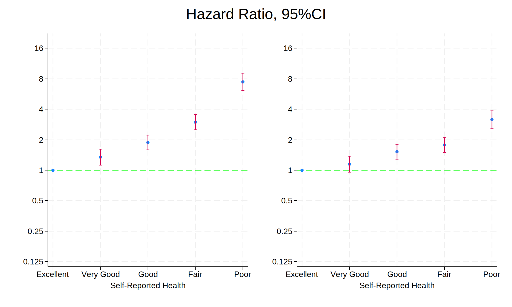
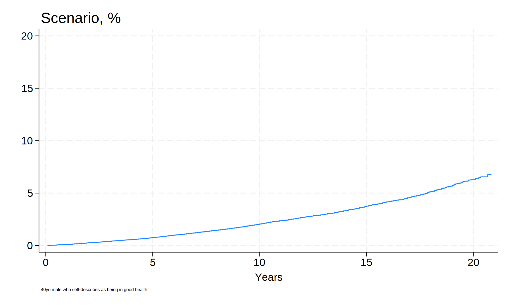

Project Setup
.
. cls
.
. global repo "https://github.com/jhustata/project/raw/main/"
. global nhanes "https://wwwn.cdc.gov/Nchs/Nhanes/"
.
.
. do ${repo}followup.do
. save followup, replace
. import sasxport5 "${nhanes}1999-2000/DEMO.XPT", clear
. merge 1:1 seqn using followup, nogen
. save survey_followup, replace
.
.
. import sasxport5 "${nhanes}1999-2000/HUQ.XPT", clear
. tab huq010
. merge 1:1 seqn using survey_followup, nogen keep(matched)
. rm followup.dta
. rm survey_followup.dta
. g years=permth_int/12
. stset years, fail(mortstat)
. replace huq010=. if huq010==9
. label define huq 1 "Excellent" 2 "Very Good" 3 "Good" 4 "Fair"
> 5 "Poor"
. label values huq010 huq
. levelsof huq010, local(numlevels)
. local i=1
. foreach l of numlist `numlevels' {
. save week7, replace
. sts graph, ///
> by(huq010) ///
> fail ///
> per(100) ///
> ylab(0(20)80 , ///
> format(%2.0f) ///
> ) ///
> xlab(0(5)20) ///
> tmax(20) ///
> ti("Self-Reported Health and Mortality") ///
> legend( ///
> order(5 4 3 2 1) ///
> lab(1 "$legend1") ///
> lab(2 "$legend2") ///
> lab(3 "$legend3") ///
> lab(4 "$legend4") ///
> lab(5 "$legend5") ///
> ring(0) pos(11) ///
> )
. graph export nonpara.png, replace
.

semi-parametric
.
. stcox i.huq010, basesurv(s0)
Failure _d: mortstat
Analysis time _t: years
Iteration 0: Log likelihood = -14053.711
Iteration 1: Log likelihood = -13842.257
Iteration 2: Log likelihood = -13815.469
Iteration 3: Log likelihood = -13815.219
Iteration 4: Log likelihood = -13815.219
Refining estimates:
Iteration 0: Log likelihood = -13815.219
Cox regression with Breslow method for ties
No. of subjects = 5,436 Number of
> obs = 5,436
No. of failures = 1,671
Time at risk = 91,679.7499
LR chi2(4
> ) = 476.98
Log likelihood = -13815.219 Prob > ch
> i2 = 0.0000
-----------------------------------------------------------------
> -------------
_t | Haz. ratio Std. err. z P>|z| [95% co
> n
> f. interval]
-------------+---------------------------------------------------
> -------------
huq010 |
Very Good | 1.347475 .1251746 3.21 0.001 1.12317
> 6
> 1.616567
Good | 1.880346 .1619641 7.33 0.000 1.58825
> 1
> 2.226159
Fair | 2.985347 .2634849 12.39 0.000 2.51112
> 5
> 3.549126
Poor | 7.475088 .7565146 19.88 0.000 6.13014
> 4
> 9.115111
-----------------------------------------------------------------
> -------------
. matrix define mat = r(table)
. matrix list mat
mat[9,5]
1b. 2. 3. 4. 5.
huq010 huq010 huq010 huq010 huq010
b 1 1.3474753 1.8803457 2.9853475 7.4750881
se . .12517462 .16196412 .26348489 .75651458
z . 3.2104048 7.3309743 12.392068 19.876295
pvalue . .00132548 2.285e-13 2.885e-35 6.528e-88
ll . 1.1231762 1.5882512 2.5111252 6.1301437
ul . 1.6165672 2.226159 3.5491258 9.1151112
df . . . . .
crit 1.959964 1.959964 1.959964 1.959964 1.959964
eform 1 1 1 1 1
. matrix mat = mat'
. svmat mat
. preserve
. keep mat*
. drop if missing(mat1)
(9,960 observations deleted)
. rename (mat1 mat2 mat3 mat4 mat5 mat6 mat7 mat8 mat9)(b se z p
> ll ul df crit eform)
. g x=_n
. replace b=log(b)
(5 real changes made)
. replace ll=log(ll)
(4 real changes made)
. replace ul=log(ul)
(4 real changes made)
. twoway (scatter b x) || ///
> (rcap ll ul x, ///
> yline(0, lcol(lime)) ///
> ylab( ///
> -2.08 "0.125" ///
> -1.39 "0.25" ///
> -.69 "0.5" ///
> 0 "1" ///
> .69 "2" ///
> 1.39 "4" ///
> 2.08 "8" ///
> 2.78 "16") ///
> legend(off) ///
> xlab( ///
> 1 "$legend1" ///
> 2 "$legend2" ///
> 3 "$legend3" ///
> 4 "$legend4" ///
> 5 "$legend5") ///
> xti("Self-Reported Health") ///
> )
. graph export semipara_unadj.png, replace
(file semipara_unadj.png not found)
file semipara_unadj.png saved as PNG format
. graph save semipara_unadj.gph, replace
(file semipara_unadj.gph not found)
file semipara_unadj.gph saved
. restore
.
.

Inference
.
. hist ridageyr
. graph export nonpara.png, replace
. //replace ridageyr=ridageyr/10
. capture drop s0
. stcox i.huq010 ridageyr riagendr, basesurv(s0)
. return list
. matrix define mat_adj=r(table)
. matrix define mat_adj=mat_adj'
. matrix list mat_adj
. svmat mat_adj
. keep mat_adj*
. drop if missing(mat_adj1)
. rename (mat_adj1 mat_adj2 mat_adj3 mat_adj4 mat_adj5 mat_adj6 m
> at_adj7 mat_adj8 mat_adj9)(b se z p ll ul df crit eform)
. g x=_n
. replace b=log(b)
. replace ll=log(ll)
. replace ul=log(ul)
. twoway (scatter b x if inrange(x,1,5)) || ///
> (rcap ll ul x if inrange(x,1,5), ///
> yline(0, lcol(lime)) ///
> ylab( ///
> -2.08 "0.125" ///
> -1.39 "0.25" ///
> -.69 "0.5" ///
> 0 "1" ///
> .69 "2" ///
> 1.39 "4" ///
> 2.08 "8" ///
> 2.78 "16") ///
> legend(off) ///
> xlab( ///
> 1 "$legend1" ///
> 2 "$legend2" ///
> 3 "$legend3" ///
> 4 "$legend4" ///
> 5 "$legend5") ///
> xti("Self-Reported Health") ///
> )
. graph export semipara_adj.png, replace
. graph save semipara_adj.gph, replace
.
. graph combine semipara_unadj.gph semipara_adj.gph, ///
> ycommon ti("Hazard Ratio, 95%CI")
. graph export unadj_adj.png, replace
.
.

Extracting Parameters
.
. cls
. use week7, clear
.
. cls
. use week7, clear
. replace riagendr=riagendr-1
. stcox i.huq010 ridageyr riagendr, basesurv(s0)
. keep s0 _t _t0 _st _d
. save s0, replace
. ereturn list
. matrix beta = e(b)
. matrix vcov = e(V)
. matrix SV = ( ///
> 0, ///
> 1, ///
> 0, ///
> 0, ///
> 0, ///
> 40, ///
> 1 ///
> )
. matrix SV_ref = ( ///
> 0, ///
> 1, ///
> 0, ///
> 0, ///
> 0, ///
> 60, ///
> 1 ///
> )
. //absolute risk
. matrix risk_score = SV * beta'
. matrix list risk_score
. di exp(risk_score[1,1])
. matrix var_prediction = SV * vcov * vcov'
. matrix se_prediction = sqrt(var_prediction[1,1])
.
. matrix risk_score_ref = SV_ref * beta'
. matrix list risk_score_ref
. di exp(risk_score_ref[1,1])
. matrix var_prediction_ref = SV_ref * vcov * vcov'
. matrix se_prediction_ref = sqrt(var_prediction_ref[1,1])
.
. local hr = exp(risk_score_ref[1,1])/exp(risk_score[1,1])
. di `hr'
.
. //di "We conclude that `exp(risk_score[1,1])'"
.
. //
. g f0 = (1 - s0) * 100
. g f1_ = f0 * exp(risk_score[1,1])
. line f1 _t , ///
> sort connect(step step) ///
> legend(ring(0)) ///
> ylab(0(5)20) xlab(0(5)20) ///
> yti("") ///
> ti("Scenario, %", pos(11)) ///
> xti("Years") ///
> note("40yo male who self-describes as being in good health"
> ///
> ,size(1.5) ///
> )
. graph export scenario.png, replace
.
.
